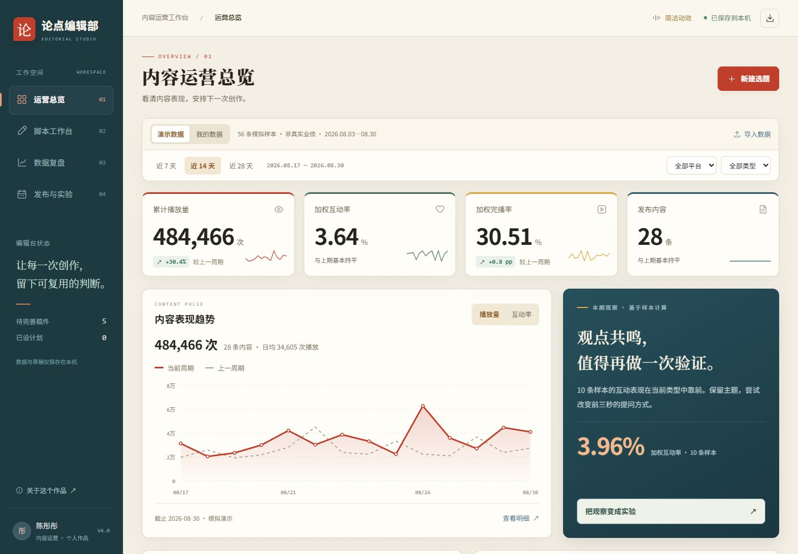

论点编辑部
把选题、脚本、口播节奏和数据复盘放在同一张编辑台上，让创作经验留得下来。
本地模板与规则 · 未连接实时 AI打开工作台 ↗

可以怎样使用
- 在运营总览中查看演示数据与内容表现。
- 进入脚本工作台，编辑选题、来源依据与脚本，生成供外部 AI 使用的提示词。
- 查看口播节奏预演，导出脚本；在数据复盘与实验页记录下一次验证。
功能范围
口播预演为字幕计时，不含音频；发布计划不会自动发布到平台。草稿与数据保存在当前浏览器。
把选题、脚本、口播节奏和数据复盘放在同一张编辑台上，让创作经验留得下来。

口播预演为字幕计时，不含音频；发布计划不会自动发布到平台。草稿与数据保存在当前浏览器。